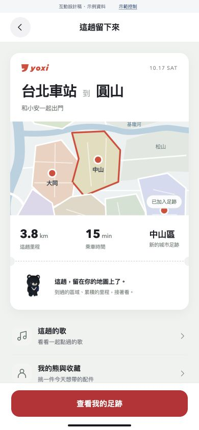

三個位置，
說清楚新增的體驗。
以苡婷的 yoxi_MATCH_01 為基準。保留 DISCOVER、PLAY、MATCH & GO；新增功能進入既有敘事，正文不必再加一章遊戲。

P7 · 平常玩一局
Run 主畫面＋好友榜局部

P9 · 抵達後留下什麼
接在同行完整流程的最後

P13 · 累積看得見
里程、城市足跡的大畫面

P13 · 個人的收藏
熊與一件收藏配件近圖
其他頁只補必要的連接
| P5 | 三大模組下方，加共同的收藏、足跡與好友紀錄。 |
| P6 | 維持興趣整理與活動推薦。足跡只留一個小入口。 |
| P8 | 維持行程條件、共同喜好與雙方確認。熊不取代乘客資料。 |
| P10 | AI 負責內容理解與推薦；公里加總、遊戲結算和排名是程式規則。 |
| P14–15 | 增補 Run 完成、足跡回看及地方收藏等觀察指標；本機功能與正式多人服務分開列。 |
已核對完整 15 頁 PPTX 與字型修正版 PDF，並視讀相關頁。10/14 新雜誌版目前只有第 1 頁，不當成另一份完整簡報。本次提供配置建議和可取用的畫面，尚未修改 PDF/PPTX。